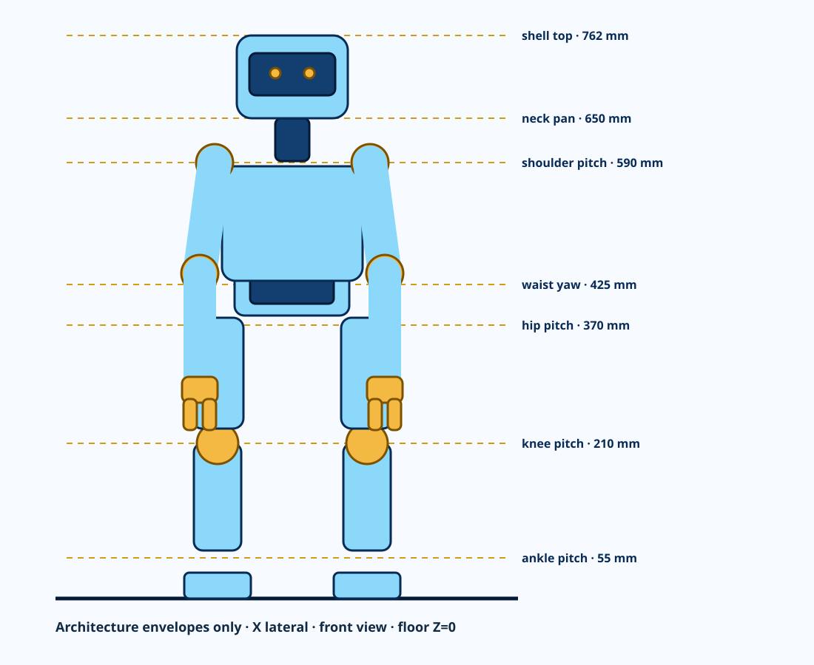

762 mm
Exact neutral-pose floor-to-shell-top geometry.
PRELIMINARY - CONFIGURATION AND PACKAGING CAD ONLY - NOT APPROVED FOR PROCUREMENT, FABRICATION, ASSEMBLY, POWERED TESTING, MOTION, OR ENERGIZATION
PROJECT BUTTON · HR-30-BODY-ARCH-P0.1 · FIRST NATIVE FULL-BODY CAD
This is the first dimensioned, repository-native HR-30 assembly: exact height datums, named limbs, 25 candidate axes, structural envelopes, shells, and component reservations. It is architecture CAD—not yet manufacturing CAD.
Exact neutral-pose floor-to-shell-top geometry.
Named head, waist, arm, hand, hip, knee, and ankle axes.
Dimensioned joint-module families spanning all 25 axes.
Fabrication, motion, safety, or energization approvals.
Drag to orbit; scroll or pinch to zoom. Sky blue is shell envelope, dark blue is load-path envelope, gold is joint/hand hardware, and red rods are reference axes. Transparent objects reserve electronics, sensors, restraint, and joint datum space. The downloadable STEP embeds the exact SHA-bound actuator B-Reps; the GLB uses dimension-matched simplified actuator bodies so the web model remains practical to load.

STEP and GLB are generated from a versioned CadQuery source. The STEP reimports with vertices exactly at Z=0 and Z=762 mm.
All 25 candidate axes have coordinates, directions, regions, and provisional ranges in a machine-readable schedule.
The revised bilateral shoulder and hand geometry gives a 360 mm nominal reach and 900 mm fingertip span, meeting both preferred targets. Tolerance and physical-sweep validation remain open.
The active tether-first model is 9.958 kg. The 11.424 kg packaging case includes 1.357 kg for a rejected direct-source pack envelope, cassette and unselected protection allowance. Neither configuration is an as-built mass property.
| Datum | Z above floor | Role |
|---|---|---|
| Ankle roll / pitch | 35 / 55 mm | 20 mm serial-axis separation inside the ankle housing |
| Knee pitch | 210 mm | 155 mm above ankle pitch |
| Hip pitch / roll / yaw | 370 / 390 / 410 mm | 20 mm serial-axis separation inside the hip housing |
| Waist yaw | 425 mm | Upper-body rotation datum |
| Shoulder pitch | 590 mm | Upper-arm datum |
| Neck pan | 650 mm | Head pan datum |
| Shell top | 762 mm | Exact nominal standing height |
Convert the ten visible module-family candidates into released shafts, selected bearings, verified fits, retained fasteners, stops, encoders, and serviceable housings.
Convert solid visual envelopes into materialized frames and tool-removable covers with thickness, splits, edges, vents, access, and retention.
Route bend-controlled cables and select the actuator rail, protection, regeneration handling, tether, and eventual onboard energy system.
Close mass/COM/inertia, collision, gait loads, thermal behavior, stopping, fall restraint, DFM, tolerances, FAI, physical testing, and qualified review.
URDF and MJCF cover all 25 commanded axes with an unanchored base and provisional masses, inertias, geometry and limits.
9.958 kg active tether-first planning mass with 0.042 kg planning margin to the authoritative 10 kg hard limit; the 8 kg target remains missed. The separate 11.424 kg onboard-envelope model exceeds the hard limit, retains a rejected pack envelope and is not an active power configuration. Physical mass, COM, inertia and energy selection remain open.
OpenAI produces expiring high-level JSON requests only. Deterministic local software and independent hardware retain every motion and permit decision.
Suspended characterization, restrained standing, weight transfer, capture steps and tethered walking are separate development gates.
Six actuator-power and six data paths include separate moving-loop reservations through the neck, both arms and both legs.
Every whole-body axis is assigned to one of eight protected segment candidates and one explicit actuator connector boundary.
Primary sources close the actuator pins, eight MCU channels, interface-device pins, and exact data-only field connector candidates.
Assembled cables, branch protection, conductor sizing, flex life, termination, EMC and physical tests remain open.
Open the interactive harness guide, or inspect the eight branch assemblies, 25 drops, and 33 connector boundaries.
One hierarchy page and eighteen populated child sheets cover energy, safety, compute, every actuator segment, head HMI, pelvis IMU, both feet and the isolated onboard-later path.
Every actuator pin-2 VDD now has its own unresolved protection/telemetry boundary; the multidrop harness carries data and reference only.
The rejected direct 14.8 V path is gone. XH/XM use the controlled tether rail while each XC330 segment has a regulated 9 V candidate.
KiCad validates encoded connectivity only. Protection values, physical energy/safety terminals, stopping behavior and validation remain open.
Open the interactive 19-sheet electrical guide, inspect the eight-channel pin map, or download the KiCad project, terminal schedule, net schedule, and complete ERC report.
Sourced parts across five isolated RS-485 and three translated TTL application circuits.
Native 82 × 42 mm six-layer KiCad routed candidates sized to the torso tray.
The ten-sheet carrier schematic hierarchy parses with no ERC errors or warnings.
Both boards have zero DRC violations and zero unconnected pads. Machine files remain non-released candidates.
axis-bound commissioning branches across five distributed board instances.
assembly-DNP spare channels remain visibly unpopulated.
Eight editable, connected native schematic sheets.
Routed 124 × 45 mm candidate with zero unconnected pads. Stackup and thermal proof remain open.
physical UART groups bound from STM32H743 package pins to the two carrier boards.
millimetre six-layer native KiCad controller candidate.
Zero unconnected items; encoded board-rule checks pass.
The deterministic controller never replaces the hardwired safety chain.
Left leg, right leg, left proximal arm, right proximal arm, and waist are five independently identified RS-485 segments.
Left wrist/gripper, right wrist/gripper, and head pan/tilt are three protected TTL half-duplex segments.
Primary sources bind the actuator pins, eight STM32 channels, interface-device pins, and exact data-only field connectors.
PCB layout/passives, assembled cables, branch protection, sizing, termination and physical tests remain selection work.
Head, neck, torso, pelvis, bilateral arms, functional hands, legs and feet have controlled module records.
Every axis has exactly one owning module and a dimensioned candidate mount family.
Module masses reconcile to the active tether-first planning model.
Released manufacturing drawings or fabrication approvals; P0.1 remains preliminary.
Individual native STEP and SVG drawing-view exports.
Planar 2.5D candidates have DXF profiles; removable printed covers have STL meshes.
Material/cut, process and inspection registers bind every part to its source geometry.
Released drawings, tolerances, exact materials, DFM, FAI and physical proof remain open.
Open the individual manufacturing-file guide · Part-file register · Material/cut list.
controlled parts bound to a shop route and exact upload file hash.
nonempty quote batches separate flat structural parts, machined parts, mechanisms, rods and fit articles.
verified Boston-area and online fabrication routes.
material, drawing, order or fabrication approvals.
Open the interactive sourcing/RFQ guide · 98-part route register · stock mismatch screen.
one BPL-envelope left-gripper fit plate at 1:1 scale.
one complete makerspace fit-check bundle with assembly and inspection travelers.
current Boston-area maker and commercial candidates.
BPL is temporarily unavailable; no quote or physical result exists.
two reusable one-actuator bench candidates; human approval required.
one gripper fit plate ready for a printer quote.
cable and connector coupon requests.
full actuators, power boards, batteries and production harnesses remain held.
actual-axis joint-hardware items now classified.
shaft and interface-carrier refinement STEP/SVG files.
catalogue bearing envelopes blocked from custom fabrication.
pulley and coupling predecessor placeholders now mapped to named successors in the transmission-closure package.
Open the actual-axis joint-hardware guide · 142-item register · Inspect the successor transmissions.
Reusable native joint-family assemblies.
Every whole-body axis maps to one family.
Shafts, bearings, truss carriers, retainers, fasteners, actuator B-Reps, transmissions and encoder carriers are visible and registered.
Exact fits, products, capacity, DFM, FAI and physical proof remain open.
M3/M4/M5 screw candidates occupy every carrier hole.
four-hole carrier plates are populated across all 25 axes.
generic-steel planning screen; received hardware mass remains open.
Torque, preload, locking, tapped-side material, access, strength and fatigue remain unresolved.
Fabrication STEP and integration-reference STEP exports cover every body module.
Fabrication parts, including both complete gripper mechanisms, are deterministically owned by the module exports.
Joint, hand, shell and equipment geometry comes from the same generators as the integrated robot.
Explosion is a service/refinement view; drawings, fasteners, fits, tolerances and physical proof remain open.
Dependency-ordered body modules.
Fabricated parts and actuated axes bound to the traveler.
Located joint screws and installed equipment records.
Materials, tolerances, exact hardware, torque and physical inspection remain open.
URDF · MJCF · Onboard-envelope mass/COM/inertia · Tether-first mass/COM/inertia · Mass configurations · Mass reconciliation · Mass item register · Lightweight decisions · Power/energy · Thermal · Compute/sensors/network · Actuator bus topology · All-axis bus binding · Electrical integration · Energy and safety spine · Cost · Whole-robot BOM · Hands · Walking · OpenAI/local-control boundary · Action schema · Build/electrification plan · Fabrication-candidate STEP · Part register · Service panels · Harness routes · Interactive physical harness
Dark blue is the candidate metal frame, sky and mid blue are separately removable covers, gold is the uncredited restraint bridge, orange reserves actuator-power routing, and cyan reserves data and low-voltage routing. These are dimensioned architecture parts and corridors, not released manufacturing drawings or selected cables.
Physical-envelope STEP · Kinematic-reference STEP · Interactive GLB · Editable CadQuery source · Joint-axis schedule · Joint-module families · All-axis module binding · Vendor source register · Per-axis actuator transforms · Actuator allocation · Asimov 1 matrix · Component schedule · Geometry checks · Open holds
64 located candidate items, 3.722 kg provisional as-installed mass. Eight one-bus walking-power boards are visible in the pelvis, torso and thighs. The rear-torso battery envelope is retained as rejected legacy geometry; tether-first is primary and every physical energy selection remains open.
Equipment register · Equipment STEP · Integrated whole-robot STEP · Battery-source boundary.
Axes tied to the current URDF mass tree and actuator/transmission allocation.
XC330 wrists and reduced XM430 ankles remove distal mass while retaining the current static endpoint screen.
The whole-body candidate now uses dedicated 2.5:1 knee reductions so a sub-3 A current policy can meet the static development screen. Continuous gait and belt capacity remain open.
Published stall torque is shown only as a momentary endpoint. It grants no motion authority.
8 complete articulated robots are shown from neutral stand through mirrored right- and left-leg lift and capture-step candidates. Green slabs identify the modeled support region. These are pose references—not approved commands or evidence that the robot can balance.
| Pose | Stage | Support | Primary COM margin | Swing clearance | Forward placement |
|---|---|---|---|---|---|
| Neutral double support | S2 | DOUBLE | 35.8 mm | 0.0 mm | 0.0 mm |
| Crouched double support | S2 | DOUBLE | 37.7 mm | 0.0 mm | 0.0 mm |
| Left weight transfer | S3 | DOUBLE | 23.6 mm | 0.0 mm | 0.0 mm |
| Right foot lift | S4 | L SINGLE | 23.7 mm | 6.8 mm | 1.0 mm |
| Right capture-step candidate | S5 | L SINGLE | 23.9 mm | 17.2 mm | 40.7 mm |
| Right weight transfer | S3 | DOUBLE | 25.2 mm | 0.0 mm | 0.0 mm |
| Left foot lift | S4 | R SINGLE | 25.3 mm | 6.8 mm | 1.0 mm |
| Left capture-step candidate | S5 | R SINGLE | 25.5 mm | 17.2 mm | 40.7 mm |
Minimum nominal nonadjacent-link clearance; 0 common-volume interferences.
Minimum nominal nonadjacent-link clearance; 0 common-volume interferences.
Minimum nominal nonadjacent-link clearance; 0 common-volume interferences.
Minimum nominal nonadjacent-link clearance; 0 common-volume interferences.
Minimum nominal nonadjacent-link clearance; 0 common-volume interferences.
Minimum nominal nonadjacent-link clearance; 0 common-volume interferences.
Minimum nominal nonadjacent-link clearance; 0 common-volume interferences.
Minimum nominal nonadjacent-link clearance; 0 common-volume interferences.
All checked poses have zero common-volume interference. Clearances below 5.0 mm remain packaging holds because covers, wiring, tolerance and tracking error are not included. Read the collision model · Pair register · Named exclusions
Source-bound 1:1 STLs at Z=0.
Head-to-feet module ZIP bundles.
Parts printed or physically accepted.
Printer, material, supports and slicer profile still require physical selection.
Open the full-scale fit-check guide · Part and transform register · Candidate plate register.
RSP-500-12, PNOZ s4 and two LC1D40ABD contactors are located in a 1418N4C6 external-panel candidate—not inside the robot.
Each contactor's 21-22 mirror-certified NC auxiliary is in the monitored reset chain. This corrects the former candidate mismatch but does not establish an achieved safety level.
Five holders feed individual RS boards and three feed separate 9 V regulators through a touch-safe SBS75G tether boundary.
Fault current, wire, connector temperature, coordination and regeneration evidence remain open.
Module-0.5 pinion and matching rack geometry replace rectangular placeholder teeth.
CAD-derived pad opening over 26 mm coupled travel.
The OPEN assembly moves both racks and rotates the pinion 148.969 degrees on the recognizable whole robot.
Manufactured profile, fits, materials, horn adapter, calibration, pinch tests, endurance, DFM and FAI are unresolved.
Hip pitch/roll, knee pitch and ankle pitch/roll are allocated bilaterally.
A dedicated 2.5:1 knee module replaces the previous 2:1 knee drive; exact tooth counts, belt lengths and solved centers are encoded.
MISUMI P-bore-plus-tap pulleys and EV5GT belts plus ROBOTIS X540/X430 horn families are named.
Material, fits, fasteners, tension, tooth loads, guards, fatigue and physical proof are unresolved.
Open the leg-drivetrain guide · axis allocation · center geometry.
Motor-flange and output-shaft adapter families.
Reduced leg axes have a complete nominal allocation.
Exact HN12/HN13 CAD and published bolt circles control the motor interface.
Fits, material, tolerances, fasteners, capacity and physical inspection remain open.
Reduced axes have exact candidate pulleys, belts, horns and nominal adapter solids.
Zero nominal inter-drive common-volume interference.
Pitch drives sit outboard; roll drives sit behind their bearing stacks.
Material, fits, fasteners, capacity, motion sweep, covers, cables, tolerances and physical proof remain open.
predecessor pulley and coupler placeholders are dispositioned.
shoulder belt drives and direct-output adapter axes are installed.
A successor STEP and interactive GLB carry the transmission hardware on the complete humanoid.
Products, fits, retention, capacity, DFM, FAI and physical tests remain open.
old pulley/coupler records are mapped and superseded.
catalogue pulley positions, direct-adapter axes and detailed hands.
unmapped or still-authoritative predecessors.
No successor is selected for procurement or released for fabrication.
objective release gates
staged power states; motion excluded
executed physical gates
qualified signoffs
Open the interactive first-energization readiness guide. It is a controlled plan, not permission to connect or energize hardware.
individual power pairs are bound to one axis current policy and one routed planning length.
candidate internal-limit sum; not normal demand or a source rating.
published momentary stall-endpoint sum retained only as a separate fault boundary.
RMS demand, wire construction, branch protection, voltage drop, temperature and regeneration still require evidence.
Open the harness/current-policy guide · 25-axis binding · eight-bus boundary.
Axes have explicit candidate Current Limit values.
The knee ratio is corrected so its static endpoint screen fits below 3 A.
Arithmetic sum of all eight bus caps; not a normal-demand or supply rating.
External branch current, connector temperature, protection coordination, continuous torque and gait duty are unvalidated.
Open the current/torque guide · 25-axis register · bus budget.
located head HMI items
routed physical links
correct 22-to-15 camera links
built or powered links
Open the interactive head HMI harness guide. The selected architecture is a candidate, not a procurement or energization release.
axis feeds bind moving cable, fixed transition and restrained pigtail.
largest planning drop at a candidate current cap.
outgoing GND/VDD cavities required to remain empty across 17 data-only links.
CF130 stops at a fixed panel-mounted Micro-Fit pair; Alpha 3051 continues to JST EH under restraint. Core OD, bracket CAD, crimp and thermal qualification remain open.
Open the interactive actuator cable-kit guide. It defines 25 fixed-transition candidates but grants no procurement, crimping, connection or powered-work authority.
fixed-side transition candidates share one controlled architecture.
coupon specimen families cover both crimps, panel retention and flex isolation.
axis routes awaiting measured pull-string cut lengths.
built coupons, executed tests or production cut lengths.
Open the interactive coupon and route-measurement guide. Direct CF130-to-JST crimping is rejected; do not cut production cable from geometric planning values.
dimensioned nominal placements
solids per cassette
received connector fit checks
Open the interactive bracket and whole-body placement guide. Connector cutout, material, clamp, attachment, tolerance and physical validation remain open.
Every whole-body actuator has a cable selection, proposed global ID and read-only commissioning row.
One disconnected actuator at 11.0 V; torque and motion commands are prohibited.
The station is not permission to connect or energize hardware.
Red and black Mueller 39-inch shrouded-banana leads remove the custom plug-termination ambiguity.
Candidate crimp, crimp-height, pull-test, cut and silicone-strip tools now have exact order codes and primary-source boundaries.
Black/GND is cavity 1; red/VDD is cavity 2. Tip removal, strip, crimp and 25 +/-6 mm/min pull criteria are controlled.
Receipt, calibration, compatibility, coupon, inspection and connection authority remain unresolved.
Three fixture sizes derive from SHA-bound vendor geometry and fully cover the native output region.
The single-ID inspector exposes ping and read calls only; broadcast and scan paths are absent.
Received fit, print quality, retention, SDK lock and connection authority are not yet validated.
axis torque bits forced inactive
UART clocks disabled and direction pins low
The freestanding Cortex-M7 ELF/BIN and compiled vector evidence reproduce byte-for-byte.
The binary has never run on hardware; no connection or powered-work authority follows.
millimetre native two-layer KiCad adapter.
Exact STDC14-to-JDBG1 connectivity and routed board rules pass.
The board and cable are unbuilt; wire selection, crimping, inspection and target supply remain open.
exact or controlled candidate line items
mapped power contacts
built cables or powered tests
Open the interactive logic-power kit guide. Setpoints, grounding and connection remain unreleased.
axis-bound paired bidirectional branches.
electrically separate one-bus board instances.
Exact YWP land pattern and routed ten-layer board candidate.
bus-domain brake/dump circuits still require measured sizing.
Open the interactive walking-power successor. The earlier five-board shared-input grouping is rejected; production stackup, DFM, thermal, dump-energy and powered-motion authority remain open.
logic-only path with every actuator connection physically absent.
electrically separate bus-source feeds and individual actuator branches.
candidate cap sum exceeds the source endpoint; measured demand or a new source architecture is required.
released fuse values or hot conductor ratings.
Open the interactive protection/conductor guide. Regeneration, coordination, physical tests and all connection authority remain open.
controlled grounding/reference domains
candidate bond records
installed or measured bonds
Open the interactive grounding/reference guide. The topology is explicit; approval and every physical result remain open.
hardware candidate/selection records
whole-robot bond zones
joint-bypass obligations
installed or measured bonds
Open the interactive protective-bonding implementation guide. Exact sizing, installation, tests and authority remain open.
exact JDBG1 debug contacts
controlled release gates
planned physical measurements
flashes or HIL executions
Open the interactive STM32 target bring-up guide. Actuator carriers remain physically disconnected and all authority remains withheld.
open whole-robot hazards
safety/control function records
stopping-time intervals to measure
validated PL claims or physical safety tests
Open the interactive whole-body SRS. Candidate PLr d / Category 3 allocations remain unapproved; motion and energization remain prohibited.
E-stop energy removal, restart prevention and EDM have exact current circuit bindings. They remain unvalidated.
Harness backfeed, protection, restraint, speed/travel and power-loss functions still have material implementation gaps.